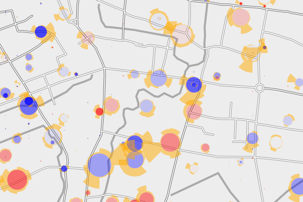
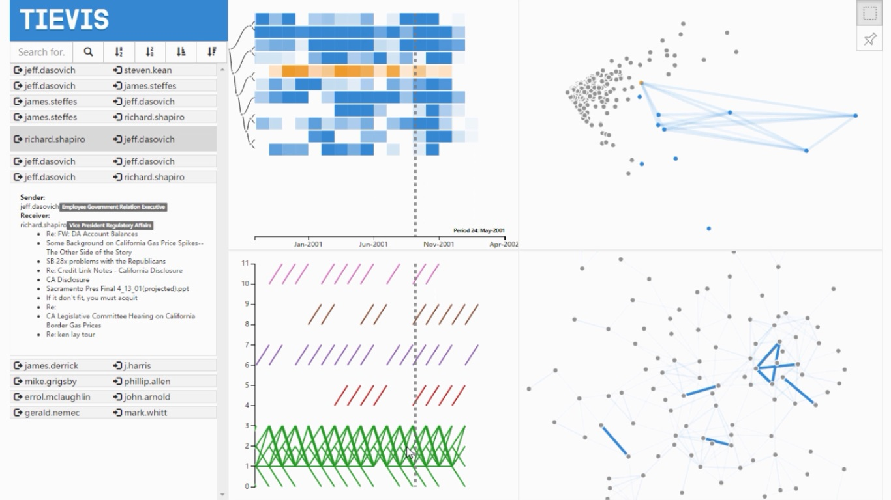

| Reading | 29 |
| Listening | 27 |
| Speaking | 22 |
| Writing | 27 |
| Verbal Reasoning | 154 |
| Quantitative Reasoning | 170 |
| Analytical Writing | 3.5 |
 |
Mobility Viewer: A Eulerian Approach for Studying Urban Crowd Flow.
Yuxin Ma, Tao Lin, Zhendong Cao, Chen Li, Wei Chen. IEEE Transactions on Intelligent Transportation Systems. Accepted, 2015. [PDF] [Video] |
 |
TieVis: Visual Analytics of Evolution of Interpersonal Ties
Tao Lin, Fangzhou Guo, Yingcai Wu, Wei Chen, Biao Zhu, Sidong Wang, Huamin Qu DAVis 2016: Workshop on Intelligent Data Analytics and Visualization. Submitted. [PDF] [Video] [Code] |
Some of the programs can be viewed on GitHub.